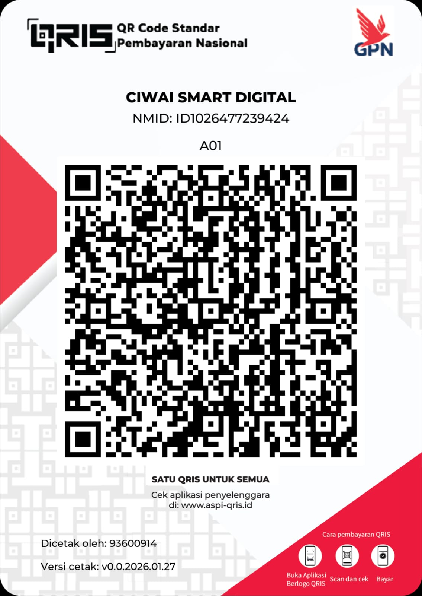

Support the Development of CiwAI
CiwAI Smart Digital is an independent digital team and lab building products, tools, and technology solutions — from apps and websites to server services and custom AI tools.
All projects are developed independently with a focus on making technology simple, useful, and accessible.
If you'd like to support its sustainability, you can contribute voluntarily via the QRIS code below.

Scan using your e-wallet or mobile banking app
💡 Your support helps cover:
- Server & infrastructure costs
- Domain & operational expenses
- Development of new CiwAI features
Thank you for being part of the CiwAI journey 🙏 Every contribution, no matter how small, truly matters.